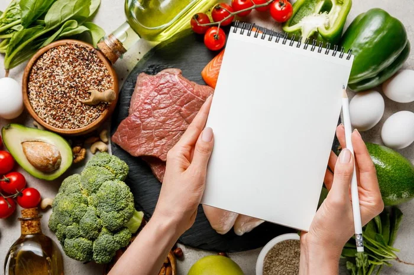
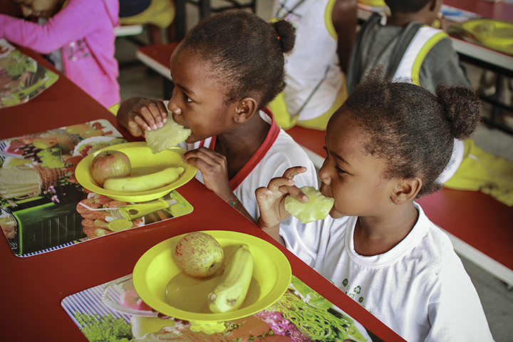
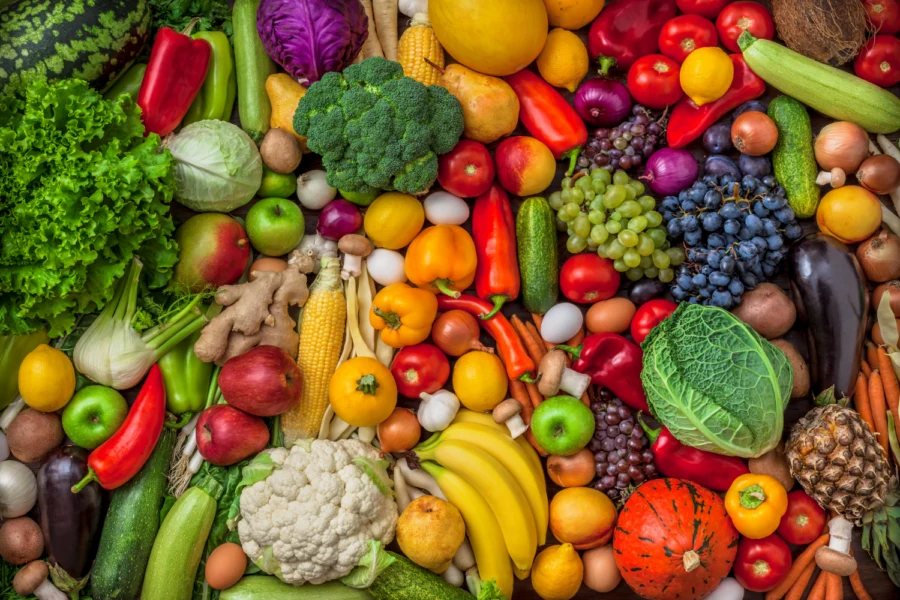
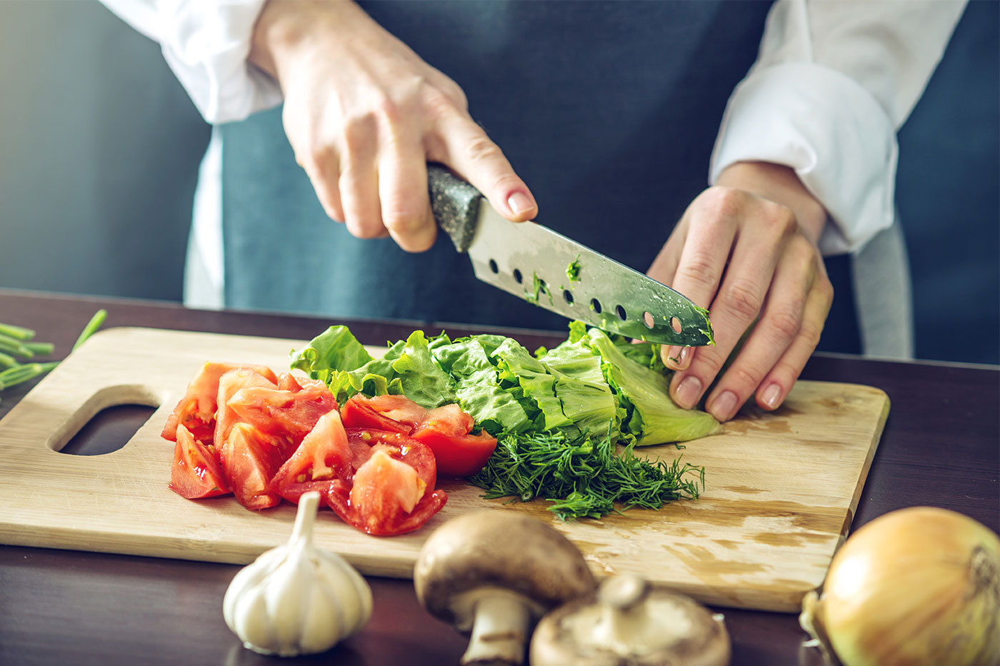

NutriViva
"Boa alimentação, novas possibilidades".
Conheça a NutriViva: uma marca que valoriza escolhas equilibradas e uma relação mais consciente com a alimentação
Sobre a marca
A NutriViva nasceu como o propósito de aproximar as pessoas de uma alimentação variada e equilibrada. Acreditamos que informação clara e escolhas possíveis para o dia a dia ajudam a construir hábitos alimentares mais conscientes.
Orientação nutricional
Conheça nosso atendimento com nutricionista para conversar sobre sua alimentação, suas necessidades e seus objetivos.

Organização alimentar
Descubra possibilidades para organizar refeições e fazer escolhas que se adaptem á sua rotina.

Educação alimentar
Aprenda sobre variedade, preparo dos alimentos e hábitos alimentares por meio de conteúdos e atividades educativas.
Pequenas escolhas fazem parte da rotina
Pequenos hábitos diários para transformar a sua relação com a alimentação.

Inclua alimentos variados nas refeições
Nenhum alimento isolado contém todos os nutrientes de que o corpo precisa, por isso, é importante comer alimentos diferentes
Reserve um momento para planejar suas compras e refeição
Reservar um momento para planejar suas compras e refeições é importante porque economiza dinheiro, reduz o desperdício de comida, melhora a saúde e poupa tempo no dia a dia

Valorize o preparo dos alimentos e aproveite o momento de comer
é importante porque transforma a alimentação de uma simples necessidade biológica em um ato de saúde física, mental e conexão social
Vamos conversar sobre a sua alimentação?
Entre em contato para conhecer a NutriViva e saber mais sobre nossos serviços - Contato: softpoint1@nutriviva.example